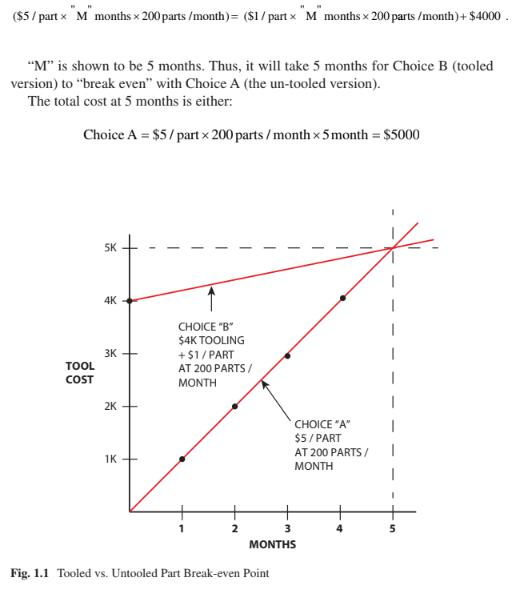

Building a clean model tutorial(建構純模型) <<
Previous 機械設計過程
來自MechanicalDesignProcess.pdf
序章
Before we get started, let’s briefly define what we mean when we talk about an
“electronic product.” It is a product that has a circuit board in it and usually has
some input/output device such as an LCD. Examples of electronic products include
cell phones, digital cameras, and the ultrasonic toothbrush.
在開始之前，我們先簡單地定義當我們談論一個“電子產品”時，它代表的是其中裝有電路板的產品，通常具有一些輸入/輸出設備，例如LCD。電子產品的例子包括手機、數位相機、超聲波牙刷。
An electronic product enclosure is the item that surrounds and supports the circuit
board. The enclosure is what makes the device usable to the consumer. The enclosure is necessary for a number of reasons – to protect the electronics (the circuit board and LCD) from the environment or from a physical jolt (such as dropping the product).
電子產品外殼是包圍並支撐電路的物件。外殼能讓消費者使用這個產品。外殼
的樣子來自各種原因，但是最必要的是保護電子設備（電路板和LCD），防止電子設備板從環境或物理顛簸（例如掉落產品）損毀。
The enclosure provides access to input information to the device, via keys or buttons perhaps, and allows information to be transferred from the device. The enclosure provides structure so that the circuit board logic is supported and protected.
Examples of some very effective product enclosures that have been developed inrecent years are the Apple iPhone 7 or the HP Spectre laptop computer (both, circa
2016).
機盒可通過按鍵或按鈕訪問設備的輸入信息也許，並允許從設備傳輸信息。外殼提供結構，以便支持和保護電路板邏輯。近年來出現的是Apple iPhone 7或HP Spectre筆記本電腦（兩者都是在2016年的產品）都是已開發出一些非常有效的產品外殼的案例。
In essence, a successful design of an enclosure will be the one in which the design has conformed to the product’s written specification (spec) and has been done within the cost and time parameters that were set.
從本質上講，一種成功的外殼設計將是設計已符合產品的書面規格（spec），並且能在設定的成本和時間參數內完成。
1.1 Design Guide
1-1設計指南
Let’s break down some of the words of the above sentence for further definition
(with the word “successful” defined in its own subtopic).
讓我們分解上面句子中的一些詞以進一步定義何謂成功
Electronic Product Enclosure (EPE = Electronic Product Enclosure)
電子產品外殼（EPE =電子產品外殼）
The electronic product enclosure consists of both the external and internal structural
elements of a product. It includes any of the hardware used for user interfacing, any of the connectors used to interface cables, and any elements that the user will physi-
cally feel and see. Many electronic enclosures contain one or more PCBA (PrintedCircuit Board Assemblies), and these must be protected against the rigors of normal usage.
電子產品外殼是由內部和外部結構所組成的要素。它包括用於使用者使用的的任何硬件，以及用於連接電纜的連接器以及用戶所有接觸與看到的物件。
許多電子機箱包含一個或多個PCBA（印刷電路板組件），外殼也必須保護它們使它們正常運作。
An enclosure could be very simple or be extremely complicated with thousands of separate parts. One of the designer’s first tasks will be to define the “system” that
they are designing, and that is covered in a later chapter.
外殼可以非常簡單，也可以非常複雜，也可以由數千個外殼組成。設計人員的首要任務之一是定義“系統”，這將在下一章中介紹。
The term “enclosure” (in this text) will be on the less complicated end of the spectrum, and the methodology explained can be extended into the more complicated design situations.
術語“enclosure”（在該文中）將處於較為簡單的範圍內，其方法是可以解釋到更複雜的設計情況。
The EPE Designer
EPE設計師
This is the person responsible for the design of the enclosure for an electronic prod-
uct. In many cases, it is a mechanical engineer, but it can be someone with a back-
ground in mechanical engineering or who has the experience of the discipline.
負責設計電子產品外殼的人員，在很多情況下，它是機械工程師，但也可以是有知識背景的人或是具有機械工程專業或具有該學科經驗的人。
A good EPE Designer will have the following characteristics:
一個優秀的EPE設計師將具有以下特徵：
- Ability to understand and conform to the product specification
- 理解並按照產品規格的能力
- Be able to add to and help create the product specification
- 能夠添加或創建新的產品規格
- Create inventive solutions to the problems presented by the product
- 為產品提出的問題創造新的解決方案
1.2 Defining the Overall Team
1-2定位整體團隊
Characteristics of the overall team are that the team can be:
團隊可以是由下列特徵定位；
- Of a small or large size
- 團隊的規模
- Located in one location or distributed worldwide
- 位於一個位置或分佈在不同區域
- Limited in resources or have access to almost unlimited resources
- 資源有限或可以使用近乎無限的資源
- In possession of the latest tools, or not
- 是否擁有最新工具
- Motivated by a variety of reasons for accomplishing their goal
- 實現目標的動機
- Varying in experience
- 是否擁有豐富的經驗
The entire engineering effort consists of an amalgam of design among several
disciplines. These disciplines include:
整個工程工作包括多個設計項目。
這些項目包括：
- Electrical engineering
- 電機工程
- Software and firmware engineering
- 軟件與固件工程
- Mechanical engineering (including structural and thermal)
- 機械工程（包括結構學和熱學）
- Industrial engineering
- 工業工程
- System engineering
- 系統工程
disciplines. Contemporary product design should bal-ance various trade-offs among all of the factors that go into the production releasedproduct.
現代的產品設計應該要平衡並且在所有因素之間進行各種權衡。
- Marketing (Including Input from Sales) This organization is responsible for the
product definition, that is, defining what the customer wants and what the product
will be from the customer viewpoint. This “product definition” usually takes the form of a document that engineering will accept as the product requirements.
Marketing also has the responsibility of overseeing how a particular product will fit
into the overall product line of the company (or division of the company).
- 市場行銷（包括來自銷售的投入）該組織負責產品的定位，即從客戶的角度定義客戶想要什麼以及產品是什麼。此“產品定義”通常以文檔型式讓工程組接收。
營銷還負責監督特定產品如何適應公司的整個產品線（或公司的部門）。
The EPE Designer interacts with Marketing in the effort to define how the prod-
uct will function, how that functionality will present itself to the customer (user interface), and how the product will look to the customer (industrial design).
EPE設計人員與市場營銷部門需要進行互動，以定義產品如何運作，該功能如何向客戶展示（用戶界面）以及對客戶呈現的產品外觀（工業設計）。
Operations (Manufacturing) This organization is responsible for the complete flow
of materials for individual components and how those individual components get
fabricated, assembled, and delivered to the customer. If engineering’s responsibility
is to produce the product documentation, operations should be able to take that
documentation and get that product produced that meets the product specifications.
- 製造組(營運組)該組負責整個製造流程，以及如何獲得材料與製造這些組件，組裝並交付給客戶。工程組產出的文檔，操作人員應該要能夠照著文檔製造符合產品規格的產品。
The EPE Designer intersects with operations by making decisions on part fabri-
cation techniques, vendor (supplier) selection, and any trade-offs between quality/cost/appearance.
EPE設計人員需通過對製造零件的技術，向供應商在(質量/成本/外觀)之間做取捨來交給製造組製造。
Testing (Design Verification) This organization is responsible for testing both the
prototyping and mature designs. This can be accomplished by resources within the
mechanical design group (itself) or by an independent group setup for this particular
function.
- 測試組負責測試初始設計和最終設計。這部分可以直接通過機械設計組原有的的資源或為此設立特定測試功能的獨立組來完成。
The EPE Designer intersects with the test function by either conducting or reviewing test results. The testing done on the product is actually a part of the prod-uct requirements document (PRD) and that it must be proven that the product passes testing as defined in that document. For example, if the PRD states that a product
must survive a one meter drop, then a test must be defined that states considerations
such as:
EPE設計師通過執行或查看測試結果來檢測功能。在產品上進行的測試實際上是產品需求文檔（PRD）的一部分，並且必須證明該產品通過了該文檔中定義的測試。例如，如果PRD聲明產品必須承受一米高的跌落，則必須定義一項說明注意事項的測試如：
1. How many drops of a single item (under test)
2.Impact faces or corners of that item
3.Environment that testing is to take place (such as ambient temperature)
4.Statistical concerns (such as how many single items must pass testing)
5.Order of testing (among various tests that unit will undergo)
6.Definition of “survive” (degree of functionality or appearance after test)
- 每一個物品多少滴
- 該物品的撞擊面或角
- 進行測試的環境（例如環境溫度)
- 統計問題（例如必須通過測試的單個項目數量)
- 測試順序（單元將進行的各種測試的順序）
- “測試通過”的定義（測試後功能或外觀的程度）
- Quality Control/Quality Assurance This organization determines whether the acceptability limits of the individual parts (or entire assemblies) meet the standards both specified in the individual product specification (the drawing) and in the estab-lished overall corporate standards. Quality control would be concerned with tactical situations, while (corporate) quality assurance would be more concerned with stra-tegic situations.
- 品保組確定單個零件是否在可接受最大公差，在單個產品規格（附圖）和已建立的總體公司標準中是否符合標準，品質控制是否與銷售戰術有關，而（公司）品質保證將與銷售戰術有關。
The EPE Designer intersects with this organization by specifying on their docu-
mentation the acceptability limits of each part and can go all up to include assem-
blies. Typically, acceptability limits take the form of:
EPE設計人員通過文檔指定的每個零件的可接受性限制來與該組互動，並且將所有零件包括在內。
通常可接受性限制採取以下形式：
1.Size (geometry) control as specified in drawing tolerances
2.Material and plating specifications stated on drawing
3.Cosmetic flaw rejection criteria stated on drawing
4.Functional specification as stated on drawing
5.Determining the “critical” nature of some aspect of the part documentation.
-
圖紙指定的尺寸公差
-
圖紙上註明的材料和鍍層規格
- 圖紙上說明的外觀缺陷報廢標準
- 如圖所示的功能規格
- 確定零件文檔某些方面的“關鍵”性質
- Service This organization is responsible for the repairing, warranty, and return of
product functions. They help determine course of action for field problems with the equipment.
- 服務組負責產品功能的維修，保修和退貨。它們有助於確任現場設備問題的解決方案。
The EPE Designer intersects with this organization by designing-in a reasonable
process for the disassembly and repair of the product. Of course, a design with a
designed-in high reliability will have less reason to repair.
It’s also possible to pro- vide for methodology to determine misuse of the product.
EPE設計師通過合理設計的過程來拆卸和維修產品，從而與此組織互動。
當然，可靠的設計將減少維修的理由。也可以找到濫用產品的問題。
Project Management This organization is responsible for tracking the project for:
項目管理組負責追蹤以下項目：
1.Time allocation – meeting deadlines that are committed
2.Resource allocation
3.Priority management (for a single project and relative to projects competing for the same resources)
4.Compliance to specifications for the product
5.Meeting cost goals
6.Reporting status of project
-
時間分配–遵守約定的最後期限
-
資源分配
-
優先管理（針對單個項目以及與之競爭的項目相同的資源）
-
符合產品規格
- 達到目標成本
- 項目報告情況
The EPE Designer intersects with this organization by reporting estimates of
time and resources for all separate line items of the mechanical part responsibility.This starts with product conceptualization, design, prototyping, and testing and con-tinues on into final release documentation. Estimates of time and resources are updated as milestones are met.
EPE設計師通過報告對EPE的估計與該組織互動， 負責機械零件的所有單獨行項目的時間和資源。 這來自於於產品的概念化，設計，原型設計和測試，以及後續的最終版本文檔。隨著里程碑的實現，時間和資源也會更新。
- Upper Management Included in this group is anyone who is responsible for the
project and has a need to understand the project. Project updates would be provided to this group at specific times during the project. Upper management would provide leadership and vision to the project.
-
高層管理組負責所有項目並需要了解該項目的所有人。
項目更新將在項目期間的特定時間提供給該小組。
高層管理人員將提供對項目的領導力和遠見。
The EPE Designer intersects with upper management in an indirect manner.
Reporting of project status is relevant at any time and is usually provided thru the
project manager.
EPE設計師通常以間接方式與高層管理人員互動。
項目狀態的報告通常在任何時候都是通過專案經理。
1.3 Product Requirements
1-3產品需求
Determining success is a matter of meeting (or exceeding) the requirements of the
project. This is a simple statement but is actually very complicated in its interrelated
aspects.
成功是指能滿足或超過項目需求。這是一個簡單的陳述，但在協同設計的方面實際上卻非常複雜。
A project could be determined successful if it met its goals. These goals can be
addressed in (one or more of) the following written documents.
如果項目達到了目標，則可以確定為成功。
這些目標可以通過以下一份或多項書面文件解決。
Product Requirements Document (PRD) This document can go by a variety of
names (it will vary by company). Basically, it is a “contract” of sorts that attempts to specify the basic functionality of the product. It can be as simple as a few para-
graphs or extremely complicated. It can contain:
產品需求文檔（PRD）該文檔可以有多種形式 名稱（因公司而異）。
基本上，“合約” 用來指定產品的基本功能。
它可以像幾個段落一樣簡單，也可以極其複雜。
它可以包含：
(a) A description of what the product will accomplish for the customer – it usually
does not specify exactly how the product will work. That is, details on “how to
get there, from here” are not explicit. This description uses words on the “final outside appearance” of the product rather than the details of the “inner work-ings.” Follow-on documents (or specifications) can also specify details of the product. Again, the PRD forms an agreement between marketing and engineer-ing as to what the product will be. The PRD can vary in its content detail. It is (should be) updated, during the course of the project, as elements get revised or added to. At each overall product review, it should be compared on the extent of how the design is conforming to the PRD.
(a)產品將為客戶完成的描述–通常不會確切說明產品的工作方式。也就是說，關於“如何從這裡到達那裡”的細節並不明確。
該描述使用的是產品“最終外觀”上的形容文字，而不是“內部工作原理”的細節。後續文檔（或規格）也可以指定產品的詳細信息。
同樣，RPD會在市場營銷和工程師之間達成協議，關於產品將是什麼。 PRD的內容詳細信息可能有所不同。
在項目過程中，隨著元素的修訂或更新，（應該）進行更新並添加。在每次整體產品審查時，都應該在設計與PRD的符合程度上進行比較。
A description of how the product will interface with the customer. This would
include:
(b)產品如何與客戶互動的說明。其中包括:
- How information is displayed to the customer or how the information will
get from the customer, to the product. This can be visual, auditory, or
tactile.
- 如何向客戶顯示信息或如何從客戶向產品獲取信息。這可能是視覺，聽覺或觸覺。
- Various interfaces to the product, such as connectors, switches, or buttons.
-
產品的各種接口，例如連接器，開關或按鈕。
- Labeling or icons intended to provide information to the customer.
-
用於向客戶提供信息的標籤或圖標
(c) A description of the various components of the product. That is, if the product
(the product being designed) needs additional equipment or cables to function
in a larger system, then a description of the various parts of the “system” will
need to be described. Thus, one will need to “draw a boundary” around exactly
what this product (being designed) is. What exactly is the “deliverable” to the
customer?
(c)產品各種組件的描述。也就是說，如果產品 （正在設計的產品）需要與其他設備連結才能在較大的系統中運行，則需要對“系統”的各個部分進行描述。因此，人們將需要圍繞著正在設計的產品的確切內容“劃界”。給客戶的“交付物”到底是什麼？
(d) Indication of the final aesthetic (visual appearance) of the product. Colors, tex-
tures, and industrial design are usually very well-specified.
(d)指示產品外觀部分的最終美學。顏色、紋理和工業設計通常都非常詳細。
(e) A listing of the environments that the product will both operate and be stored in.This includes temperature, shock, drop, vibration, humidity, water egress pro-
tection, shipping conditions, altitude, and specific corrosive atmospheres.
(e)產品將在其中運行和存儲的環境的清單，包括溫度，衝擊，跌落，振動，濕度，出水保護，運輸條件，海拔高度和特定的腐蝕性環境。
(f) A listing of any standards that the product will need to pass. This includes both
safety and regulatory standards such as Underwriters Laboratory (UL) for
safety, federal communication compliance (FCC) for electromotive magnetic
interference (EMI), and the (literally) hundreds of other compliance standards
that are a real part of today’s design world. Some of these standards are country
specific, while others are accepted on a worldwide basis. Obviously, anything to
do with medical, food, or children’s toys will have their own rigorous testing
standards to pass.
(f)產品需要通過的所有測試的清單。這包括安全和監管標準，例如安全性保險性實驗室（UL），電磁干擾（EMI）的聯邦通信合規性（FCC）以及數百種其他合規性標準 這是當今設計界的重要組成部分。其中一些標準是針對特定國家/地區的，而另一些則在全球範圍內被接受。顯然，任何與醫療、食品或兒童玩具相關的，都必須通過自己的嚴格測試標準。
Internal Test Reports These indicate positive test results. These are the results of
testing done to show that the requirements as set forth in the PRD have been passed.If the tests haven’t been passed, then there are action plans initiated to improve the product and conduct further testing.
內部測試報告這些表示測試結果的報告。這些是
進行測試以表明已通過PRD中規定的要求。如果未通過測試，則將啟動行動計劃以改進
產品並進行進一步測試。
Reports from Initial Customers This is “alpha” or “beta” testing where customer
feedback is positive or negative. It is hoped that customers are gaining measureable
value from the product. Reasonable improvements to the product can be made when
this “real-world” feedback is available. “Alpha” testing is usually done with in-
house personnel who are simulating the actual customer, while “beta” testing is
usually done with existing customers before shipment to actual (paying)
customers.
初始客戶的報告這是“alpha”或“ beta”測試，其中客戶反饋為正面或負面。希望客戶能衡量
產品的價值。並且可以對產品進行合理的改進建議
此反饋是可行的。“Alpha”測試通常使用內部人員在模擬實際客戶，而“ beta”測試是
通常在發貨到實際（付款）之前與現有客戶進行測試。
Project Management Reports
項目管理報告
(a) On expenses (expected vs. actual). This includes expenses for salaries, capital
equipment, tooling, etc. Monitoring of expenses can lead to analysis of the true
“payback periods” of the project and better predictions on expenses for future
projects.
(a)支出（預期與實際）。這包括薪金，資本設備，工具等的支出。
對支出的監控可以便於\對項目的真實“投資回報期”進行分析，並更好地預測未來項目的支出。
(b) Status on milestone dates (expected vs. actual): as with expenses, monitoring of
how well the project achieved its time commitments leads to an indication of
the true “payback period” of the project. Analyzing where milestones were not
met can lead to better predictions for future projects.
(b)里程碑日期的狀態（預期與實際的日期）：與支出一樣，監視項目完成其時間承諾的程度會指示出項目的真正“投資回報期”。
分析未達到里程碑的位置可以為將來的項目提供更好的預測
Ongoing analysis of “success” (as the product matures in the field) can be mea-
sured by:
可以通過以下方法來衡量“成功”的持續分析（隨著產品的成熟度）：
Quality Assurance Reports These contain information about customer satisfaction
and warranty returns: any issues or problems with the product must be quickly
addressed so as to protect the company’s reputation in the industry. If revisions need
to be made, they must be implemented with great urgency. Thus, if customer satis-
faction reaches some set level of reliability, the product design team will have
achieved success.
質量保證報告包含有關客戶滿意度和保修退貨的信息：必須迅速解決產品的任何問題或問題，以保護公司在行業中的聲譽。
如果需要進行修訂，則必須立即執行。因此，如果客戶滿意度達到一定的可靠性水平，產品設計團隊才算是成功。
Analysis of “Lessons Learned” From all disciplines on the project: every project will
contain items where things could have been done better. Continuous improvement
should be strived for. There should be a way to gather feedback from everyone in the
product design process on what items would need to be improved. This will enhance
the success rate of future projects. More on this subject is presented in Chap. 13.
從項目的所有學科中分析“經驗教訓”：每個項目都將包含本可以做得更好的項目。應努力不斷改進。
應該要有一種方法可以收集產品設計過程中每個人有關需要改進哪些項目的反饋。這將提高未來項目的成功率。
Sales Expected vs. actual. Sales figures can indicate the success of the project – in
the sense that marketing has predicted the need for the product, engineering/opera-
tions has delivered that product to the customer, and the customer does (indeed)
value that product. Or, in the opposite case, sales can be less than expected (pre-
dicted). This could have happened for a variety of reasons (such as):
預期銷售額與實際銷售額。銷售數字可以表明該項目的成功–從某種意義上說，市場營銷已經預測了對產品的需求，
工程/運營已將產品交付給客戶，而客戶確實（確實）對產品進行了估價。
在相反的情況下，銷售額可能會低於預期（預測）。發生這種情況可能有多種原因（例如）：
All of the above reasons should be placed in the “competitive arena.” That is,
most products have competition in their markets. Customers will choose purchases
based on their needs for performance, price, and quality. New technology solutions
must compete against the older solutions.
以上所有原因都應放在“競爭舞台”上。也就是說，大多數產品在其市場中都有競爭。客戶將根據對性能，價格和質量的需求選擇購買。新技術解決方案必須與舊解決方案競爭。
It would be rare to have all of the data available at product release to determine
how “successful” the product design effort is. Product design usually has increased
risk of success if:
產品發佈時很難獲得所有數據來確定產品設計工作的“成功”程度。
在以下情況下，產品設計通常會增加成功的風險：
- Milestone completion dates are unreasonably shortened.
- 里程碑完成日期被不合理地縮短了。
- The design has a high content of brand new components.
-
該設計包含大量的全新組件。
- Changes (additions) to the project occur at an unmanageable rate.
- 對項目的更改（添加）以難以控制的速度發生。
Successful design has been simply described as:
成功的設計簡單描述為：
1. Function to specification
2. Delivery on time to project schedule
3. Delivery at predicted costs
- 功能規格
- 準時按計劃進度交付
- 以預計的成本交貨
Of course, projects can exceed functionality, be delivered ahead of time, and
perhaps be even at a lower cost. This would be cause for celebration (although some
examination needs to go into why “actuals” didn’t match “predictables”).
當然，項目可能會超出功能，可能會提前交付，甚至成本更低。
這將是值得慶祝的原因（儘管需要進行一些檢查，以了解“實際情況”與“可預測因素”為何不匹配的原因）。
Behind the above “simple statements” for successful design is however some
very large implications and that they are not so “simple.” Let me break down the
above three variables a bit. All three are interrelated on several levels.
然而，在上述“成功設計的簡單陳述”的背後有一些
影響很大，而且不是那麼“簡單”。讓我對以上三個變量進行一些分解。
這三個方面在幾個層面上相互關聯。
1.3.1 Function to Specification
1-3-1功能規格
Specifications take many forms. They can be written documents, notes from a meet-
ing, or even verbal instructions. The way that projects create specifications varies from company to company and indeed can vary within a company itself. Also, you,
the particular Designer, can come in at various stages in an overall project. Therefore,
there is no particular way that the work description can manifest itself to you, the
EPE Designer.
規格有多種形式。它們可以是書面文件，會議記錄，甚至是口頭指示。
項目創建規格的方式因公司而異，實際上在公司內部也可能有所不同。
還有你特定的設計師可以進入整個項目的各個階段。
因此，沒有任何一種特定的方式可以使工作描述向EPE設計師展示。
Although the EPE Designer is not ultimately responsible for setting the full prod-
uct requirements (in the specification), the designer’s input is critical. The EPEDesigner will be tasked with providing input as to just how far the limits of the
design can go. For example, if the Product Requirements “arbitrarily” determine
that the shock levels for the product are 40 g maximum, the EPE Designer must do
some research (or some initial testing) as to exactly what shock level is possible or
what levels have been achieved in the past. Therefore, the 40 g level is initially
“proposed,” and the EPE Designer must agree to that level or put forth arguments
for a different level. It may even be possible that higher g levels can be agreed to.
Similarly, if cost targets in the Specification seem overly aggressive, the EPE
Designer must do some “homework” on their portion of the budget that provides
reasonable data back to the project specification.
儘管EPE設計人員最終不負責設置完整的產品要求，但設計人員的輸入極為重要。
EPE設計人員將負責提供有關設計限制可以走多遠的信息。
例如，如果“產品要求”“任意”確定產品的衝擊等級最大為40 g，則EPE設計人員必須對可能的衝擊等級進行一些研究（或一些初始測試），或者 過去達到了什麼水平。
因此，最初是“建議”使用40 g級別的，EPE設計者必須同意該級別或提出論點為不同的水平。
甚至可能會同意更高的g含量。同樣，如果規範中的成本目標似乎過於激進，EPE設計者必須在其預算部分中做一些“功課”，以向項目規範提供合理的數據。
The important item to concern the EPE Designer is with the writing down of a
specification and the later agreement (formal or informal) among the various mem-
bers of the project. For example, let us say that the general task is one of designing
a removable Disk Drive Module. Here are some possible scenarios that lead to its
“successful design.”
EPE設計者需要關注的重要事項是寫下規格以及各成員之間的後來的協議。
例如，讓我們說一般的任務是設計可移動磁盤驅動器模塊之一。
這是導致其“成功設計”的一些可能情況。
Task (Example): Removable Disk Drive Module Scenario #1: Minimal Input
(to the Designer) – The Beginnings of a Specification
任務（示例）：可移動磁盤驅動器模塊方案1：最少的輸入–規範的開始
This would mean progressing with the design without much more than verbal
information (as given above). The designer would likely proceed to find out items
that would affect the design such as:
這將意味著在進行設計時只需要口頭信息即可（如上所述），設計師可能會繼續找出會影響設計的項目。
例如：
1. How many times is the drive to be removed? Will it be just for maintenance or is
it more like once a day to secure the data?
2. How large can the module be designed?
3. Is there an existing opening for the module (in the base unit)?
4. Is there a shock concern for the disk drive (what levels of shock)?
5. Will this module be used in other base units?
- 該驅動器要卸下多少次？它是要維護還是一天進行一次來保護數據？
- 可以設計多大的模塊。
- 模塊（在基本單元中）是否有現有的開口？
- 磁盤驅動器是否有電擊問題（電擊的等級如何）
- 該模塊是否可以在其他基本單元中使用？
This document (again, you are creating the specification) can now be
revised as often as necessary, each time with agreement of those persons concerned
with the project (at this time). The document at this point does not have to be of any
great length. It can be as terse as necessary, for example, in the example of the disk
drive that we have started:
現在，每次在與項目有關的人員的同意下（此時），都可以根據需要對文檔（再次創建規範）進行必要的修訂。此時的文件不必像是其他任何文件 長度很長。例如，在我們啟動的磁盤驅動器示例中，它可以盡可能簡潔:
Project: Disk Drive Module
項目：磁盤驅動器模塊
Author: (the designer)
作者：（設計師）
Revision Level: 1 (date)
修訂級別：1（日期）
• Design requirements:
•設計要求：
1.Disk Drive Module will function under a shock load of 20 g.
2.Disk Drive Module will survive a shock load of 100 g (nonoperating).
3.Ambient air near the Disk Drive Module will be 30 °C maximum
(operating).
- 磁盤驅動器模塊將在20 g的衝擊負荷下運行。
- 磁盤驅動器模塊將承受100 g的衝擊負載（不工作）
-
在操作時磁盤驅動器模塊附近的周圍空氣最高溫度為30°C。
The above is just the start of the specification, but as more is known (specified),
the designer can proceed. The design can proceed because the designer now has
some idea when they have been successful, that is, if the design passes testing
designed to determine whether or not the design has passed the specification. In this
“Scenario,” minimal input, the specification will certainly be added to, and many
people involved with the project will need to review and approve the specification.
However, the designer can, at least, proceed to make some progress or show some
design options.
以上僅僅是本規範的開始，但正如已知的更多內容，設計人員可以繼續進行。之所以可以繼續進行設計，是因為設計者現在已經對成功有了一些想法，也就是說，設計是否通過了旨在確定設計是否通過規格的測試。在此“方案”中，只需最少的輸入，就肯定會添加規範，並且與該項目有關的許多人都需要審閱並批准該規範。 但是，設計者至少可以繼續取得一些進展或顯示一些設計選項。
• Scenario #2: A Complete Specification
•方案2：完整規範
This specification describes in detail all of the requirements of the mechanical
design.It would include:
本規範詳細描述了機械設計的所有要求，其中包括：
- Product description
- 產品描述
- Product financials
- 產品財務
- Product scheduling
- 產品排程
It would include in its design requirements such needed detail as:
它將在其設計要求中包括以下所需的詳細信息：
• Scenario #3: A Working Specification
•方案3：工作規範
This specification is (by far) the most common specification that the designer is
adhering to. The specification’s completeness is somewhere between the “Complete”
and the “Nonexistent” (beginning) specifications (Scenarios 1 and 2). With the
working specification, the project manager usually has some idea of the design con-
straints, but all aspects have not fully been vetted out. The specification is now
under “change control,” that is, it is being updated fairly often in the beginning
phases of the project, and any changes or additions are being reviewed by the proj-
ect personnel with signature responsibility. As the project matures, major changes
are under extremely tight scrutiny as these changes can greatly affect project com-
pletion dates and milestones along the way.
該規範是（到目前為止）設計人員最常用的規範。
堅持。對於工作規範，項目經理通常對設計約束有一定的了解，但尚未全面審查所有方面。
該規範處於“變更控制”之下，在項目的開始階段就經常對其進行更新，並且任何變更或增補都由項目負責人簽名。
隨著項目的成熟，對主要更改進行嚴格的審查，因為這些更改會極大地影響項目的完成日期和里程碑。
1.3.2 Delivery on Time to Project Schedule
1-3-2準時按計劃進度交付
Various schedules are prepared during a project. Each (approved by the project
team) schedule is a “snapshot” of what the current project schedule is to be. The first
schedule of importance would be the schedule that is used to justify the project. This
schedule would be the one that is being used to be the “net present value” (NPV) of
the project. This NPV project schedule would include best estimates of:
在項目期間準備各種時間表。每個（由項目團隊批准的）進度表都是當前項目進度表的“快照”。首先 重要進度表將是用於證明項目合理性的進度表。該進度表將被用作項目的“淨現值”（NVP）。該NPV項目進度表將包括以下方面的最佳估計：
Thus, there is an expected “value” that the project has if that project is completed by its expected date which is the date that the schedule presently states.
因此，如果該項目在其預期日期（即進度表當前指出的日期）之前完成，則該項目具有預期的“價值”。
However, various considerations can change during the course of a project.
They can be:
但是，在項目過程中可能會改變各種注意事項，它們可能是:
- Technical issue arises that changes implementation of original design.
-
出現了必須更改原始設計展現的技術問題。
- Personnel working on project change (either particular members or the size of team).
- 負責項目變更了人員（特定成員或團隊規模）
- Scope of project is revised (either increased or decreased).
- 修訂項目範圍（增加或減少）。
- Revisions to costing of various project components as project proceeds.
-
隨著項目的進行，修訂各種項目組成部分的成本。
As each (above) consideration changes, the project team will meet to determine
its effect on the overall project schedule and see how it affects the NPV of the proj-
ect. A determination is made to either continue the project with the revised NPV or
discontinue the project. Usually, as the length of a project is extended, there would
be more expenses associated with that extension, and the NPV would be lowered.
隨著每個（以上）考慮因素的變化，項目團隊將開會確定其對整個項目進度的影響。
做出決定以修訂後的NPV繼續該項目或中止該項目。
通常，隨著項目時間的延長，與該擴展相關的費用會更多，並且淨現值會降低。
Getting back to determining “success” as “delivering on-time to project sched-
ule,” each project can analyze if they have indeed delivered that project “on-time to
project schedule” by dissecting the causes for any extension of the time schedule. If
the extensions are deemed “reasonable” and “justified,” then the project could be
considered to be a success in this regard.
每個項目都可以通過剖析任何延長時間進度表的原因來分析它們是否按時交付了該項目。
如果擴展被認為是“合理的”和“合理的”，則該項目在這方面可以被認為是成功的。
1.3.3 Delivery at Predicted Costs
1-3-3按預期成本交貨
Just as the schedule can change (in Sect. 1.3.2, above), the costs of either the prod-
uct or the costs needed to design and deliver that product can change. Costs can
change due to the following:
正如時間表可以更改一樣，設計和交付該產品所需的成本中的任一個產品的成本也可以更改。
成本可能會因以下原因而發生變化；
- Personnel resources needed to finish the project are revised.
-
修改了完成項目所需的人力資源。
-
Capital resources needed to finish the project are revised.
- 修改了完成項目所需的資金。
- Expected cost of sales of product are revised.
- 產品的預期銷售成本已修訂。
If the changes to the project costs are determined “reasonable and “justified,” then the
project could be considered successful from a cost standpoint.
如果確定項目成本的更改是“合理且合理的”，則從成本角度來看，該項目可以被認為是成功的。
Certainly, all three of the above factors (specification, time, and cost) need analy-
sis during and after the project.
當然，以上三個因素（規格，時間和成本）都需要在項目進行期間和之後進行分析。
1.4 Sketching Versus Detailing
1-4草圖與細節
An EPE Designer must know when to shift between either of these modes:
EPE設計人員必須知道何時在以下兩種模式之間切換：
- Sketching or brainstorming: this is a very quick ideation phase. It is usually done
with a pencil. Nothing is detailed – it all seems to fit perfectly on these sketches. Scale isn’t really impor-tant; that will come a bit later. Feedback from others is attained. Speed is the main focus here; the designer is getting major choices on paper so that plusses and minuses of several choices can be decided。
•素描或集思廣益：
這是一個非常快速的構思階段。通常可以完成用鉛筆，並且沒有詳細說明，規模並不是很重要。
速度是這裡的重點。
Detailing: that is, providing “some amount” of detail. The amount of detail
needed is dependant on the criticality or the uniqueness of the situation. In the
sketch (phase), everything works, you have “glossed over” the items that may be
stumbling blocks. You have done that to speed the overall design process, but
now in the detail mode, more critical analysis is needed. While in “detail mode,”
you work out (more) exactly some critical parts of the design, the parts that a
designer recognizes as “deal breakers.” Details usually need CAD design to pro-
vide real geometry and scale to the situation. Again, design reviews can be criti-
cal to continue quickly down agreed-to design paths.
詳圖：即提供一定訊息量的詳圖。所需的詳細信息量取決於情況的嚴重性或獨特性。
草圖（階段），看似一切正常，但事實上“忽略了”有可能發生錯誤。您這樣做是為了加快整個設計過程，但是
現在，在詳細信息模式下，需要進行更嚴格的分析。
在“詳細模式”下，可以準確地設計出設計中的一些關鍵部分，即設計師認為是“交易突破者”的部分。
細節通常需要CAD設計才能提供真實的幾何圖形並根據情況進行縮放。
同樣，設計審查可能至關重要，可以迅速沿著同意的設計道路繼續前進。
1.5 Design Reviews
1-5設計評論
Some General Comments About Design Reviews:
關於設計評論的一些一般性評論
1. Take attendance, and note who is at the meeting.
1.參加會議，並註意參加會議的人。
2. Take (at least, cursorily) notes on all of the (relevant) issues that are raised.
2.記下提出的所有（相關）問題。
3. Possibly invite someone to the design review, who is not familiar with the basic
design. They could be someone from a different function or department within
the company. Sometimes, this person can add a different “take” on the issues as
they are viewing them from a different perspective.
3.邀請不熟悉基本設計的人參加設計審查。有時，這些人可以在問題上提供不同的“觀點”。
4. Briefly review the main goals of the design.
4.簡要回顧設計的主要目標。
5. Some ideas brought up will already have been thought out by the designer; that’s
fine, and just go quickly thru your rationale.
5.設計師已經考慮了提出的一些想法，請按照自己的理論繼續進行。
6. Some ideas may seem (initially) to be not valuable or not “on point.” Just note
them and move on; it’s possible that you may see the value at a later time.
6.有些想法似乎沒有價值或不切實際。只是注意到他們繼續進行；以後可能會看到該值。
7. You will get the value out of the design review – it always happens if you are
“open” to it. Thank all of those involved as they have given you their insight and
experience.
7.你將從設計評審中獲得價值–如果你對評論是開放性的，它就會永遠發生。
感謝所有相關人員，因為他們為您提供了見識和經驗。
8.Publish your notes on the meeting to those that were in attendance and to the
entire project team. This will log further action to be taken by you and others to
make progress with the design. Ask for further comments from your Design
Review Team.
8.將您在會議上的筆記發布給與會人員和整個項目團隊。這將記錄您和其他人要採取的進一步行動，
在設計上取得進展。要求您的設計審查團隊提供進一步的意見。
1.6 Communication
1-6溝通
Communication is a necessity for a design to be successful. That sentence stands by
itself but is worthy of a more full discussion.
溝通是設計成功的必要條件。該句話本身是正確的，但值得進行更充分的討論。
1.6.1 Purpose of Communication
1-6-1溝通目的
The purpose of communication is to convey information about the design. This is
required as that information supplies answers to questions, documents the design as
it presently exists, and documents the evolution of the design. Communication can
be written, filmed, or verbal. Written documentation takes the form of:
交流的目的是傳達有關設計的信息。之所以需要這樣做，是因為信息可以提供問題的答案，記錄當前存在的設計以及記錄設計的演變。交流可以書面，影片或口頭形式進行。書面文件的形式為：
- Specifications
- 技術指標
- Drawings
- 圖紙
- Project meeting notes/schedules
- 項目會議記錄/時間表
- Notes in notebooks
- 筆記本中的筆記
- Emails specific to a project or program (any digital communication)
-
特定於項目或程序的電子郵件（任何數字通信）
Film documentation are camera recordings of project proceedings, tests, and
events. Verbal communications are any of the words spoken to move the project into
a completed state. All important verbal communication needs to be put into written
form so that all members of the project can review those communications.
影片文檔是項目過程，測試和事件的攝像機記錄。口頭交流是使項目進入完成狀態的任何語言。
所有重要的口頭交流都必須以書面形式進行表格，以便所有成員都可以查看這些通訊。
1.6.2 Value of Communication
1-6-2溝通的價值
Great communication will make a project more successful. Great communication
has the following attributes:
良好的溝通將使項目更加成功。良好的溝通具有以下特性:
- Accurate – the information is true and backed by testing/documentation.
- 準確–信息真實，並有測試/文檔證實
- Concise – the information is straight to the point without excessive words.
- 簡潔–信息直截了當，沒有過多的措辭。
- Distributed – to all those that need the information.
- 分佈式–面向所有需要信息的人。
- Speedy – the information is quickly disseminated.
- 快速-信息迅速傳播
- Offers solutions – proposing a solution to problems invigorates the solution
process.
- 提供解決方案–針對問題提出解決方案，可以加快解決過程。
1.6.3 Links in the Communication Chain
1-6-3通訊的連結
One of the goals of communication is to get that information to the people who need the information. Email distributions are easy to create along with document control distribu-
tions. The EPE Designer should decide among all of the people involved on theproject team, who is critical to making the decisions that need to be made and who is copied for status purposes only.
交流的目標之一是將信息傳遞給需要的人信息。
電子郵件分發和文檔控制分發很容易創建。
EPE設計師應該在項目團隊的所有相關人員之間做出決定。
1.7 Engineering Economy
1-7工程經濟
“What something costs” is a paramount consideration in just about any endeavor. In many product designs, it will be one of the main causes of product success or failure. specification, but for now, let’s begin the discussion stating that the EPE Designer must be capable of coming up with cost information and some break-even analyses. it is stated that “If an engi-neering project is to succeed in meeting human needs, it must be designed and oper- ated in a way that promises both physical and economic feasibility.”As cost is so important, the designer needs to:
“花什麼錢”是至關重要的幾乎所有努力都需要考慮。在許多產品設計中，它將成為產品成功或失敗的主要原因之一。但是現在，讓我們開始討論，指出EPE設計人員必須能夠提供成本信息和一些收支平衡分析。“如果一個工程項目要成功滿足人類的需求，就必須以保證物理和經濟可行性的方式設計和運行該項目。”由於成本如此重要，因此設計者需要：
1.Be aware of what the cost goals (for both the individual part and the completeassembly) are for the design.
1.注意設計的成本目標（對於單個零件還是整個組件）。
2.Be aware of what the material and process options are for the part being designed.
2.注意所設計零件的材料和加工選擇
3.Propose solutions to materials and processes that are appropriate to where the prod-
uct is in its overall life cycle.
3.為適合產品整個生命週期的材料和過程提出解決方案。
4.Provide cost information, based on the appropriate quantities being ordered,
back to the project team so that this important metric is always well-known.
4.根據訂購的適當數量將成本信息提供給項目團隊，以使這一重要指標是眾所皆知的
Let’s get into an example. As shown in Chap. 4, the choice on whether to “tool”
a part is mentioned. This type of problem can be analyzed by choosing between:
(200 parts per month needed in each case)
讓我們來看一個例子。如第一章所示。
在圖4中，提到了是否“工具化”零件的選擇。
可以通過以下方式分析這種類型的問題：（每種情況下每月需要200個零件)
At what time period will the tooling cost and new part cost be equal to the old
part cost? This is what is known as the “break-even point.”
Answer: this is easily calculated or graphed (see Fig. 1.1):
在什麼時候模具成本和新零件成本將等於舊的部分成本？
這就是所謂的“收支平衡點”。
答案：這很容易計算或繪製（見圖1.1）：

ChoiceB $ = × ( ) 1 / / part 200 parts month m ×5 onth $ + = 4000 $5000
After 5 months, the total cost will be less for Choice B, the tooled part. Clearly, if
the product is produced for 5 months or more, we would choose to tool the part.
5個月後，選擇B的總成本將減少。
顯然，如果產品生產了5個月或更長時間，我們將選擇 B選項。
However, the above “economic reality” actually has some complications.
Choice B costs (above) did not include:
但是，上述“經濟現實”實際上有一些複雜性。上述選擇B的成本不包括：
1. The cost to design and document the tooled part.
1.設計和記錄工具零件的成本
2. The cost of bidding the tool and deciding that Vendor T was the best tool
vendor.
2.競標工具並確定供應商T是最佳工具供應商的成本。
3. The cost of prototyping the tooled part (before approving the drawing of tooled
part).
3.製作工具零件的原型成本
4. The cost of getting a first article of the tooled part approved (we’ll assume here
that the initial first article is approved – hopefully, no tool modification is required
as this would be an additional cost).
4.批准工具零件的第一篇文章的費用（我們在此假設第一篇文章已獲得批准-希望不需要修改工具，因為這將是額外的費用）
5. The cost of testing the tooled part (as a replacement for the un-tooled part).
5.測試工具零件的成本
6. The cost of “using up” the un-tooled part and switching over to the tooled part.
6.“用完”未使用工具的零件並切換到使用工具的零件的成本。
7. The cost of the money for the tooling. That is, the $4000 cost of the tooling is
actually worth more than $4000. Let me explain.
7.模具費用。也就是說，工具的成本為$ 4000 實際價值超過$ 4000。以下進行解釋。
If the $4000 was not going to be given to the tool maker vendor, it would be an
earning interest for the corporation. A “simple interest” calculation would have the
interest earned on $4000 be (at 2%/year): $4000 × 0.02/12 months × 5 months (the
break-even time) = $33. But, the question here may be:
如果不將4000美元提供給工具製造商，則對公司而言將是賺錢的興趣。
“簡單利息”計算將獲得4000美元的利息（按2％/年計算）：4000美元×0.02 / 12個月×5個月（即收支平衡時間）= 33美元。
但是，這裡的問題可能是：
What could the corporation do with the $4000 that would be better than just
creating the $33 simple interest? Perhaps they could invest it into the development
of a new product that could generate much more money or spend it on another tool
on a different project that would bring in more money. Yes, this isn’t simple.
公司可以用$4000做什麼呢？
創造33美元的單利嗎？也許他們可以將其投資到開發項目中，可能產生更多收益或將其花費在其他工具上的新產品
在另一個可以帶來更多收益的項目上。這並不簡單。
In the seven items above, the cost to design and document the tooled part is not
a trivial amount of money. If it takes 1 week to design, document, and prototype, the
tooled part could cost the corporation $1000 for the designer’s time (say, at $1000/
week salary).
在上面的七個項目中，設計和記錄工具零件的成本不是微不足道的錢。如果需要花一周的時間來設計，記錄和原型，則
工具零件可能會使公司在設計者的時間中花費1000美元（例如，1000美元/週工資）。
Most corporations will not “factor in” the above seven items in their “break-
even” analysis, but it is worthy of consideration in some circumstances.
大多數公司在“盈虧平衡”分析中不會“考慮”上述七個項目，但是在某些情況下值得考慮。
Another term that a designer will need to be familiar with is “return on invest-
ment” or abbreviated as ROI. This is similar to the “break-even point” as stated
earlier, but that the question is posed slightly differently. In the same problem as
above (Choices A and B), the question would be posed as:
設計師需要熟悉的另一個術語是“投資回報率”或簡稱為ROI。這類似於前面所述的“收支平衡點”，但提出的問題略有不同。
在同樣的問題以上（選擇A和B），問題將提出為：
What is the ROI on a $4000 tool to bring down the piece price of a $5 part? Once
the new tooled piece price is known ($1) and the numbers are ordered (say, per
month = 200 parts/month), then the ROI = 5 months. So, basically the return on
investment of $4000 will be 5 months.
4000美元的工具降低5美元零件的單價的投資回報率是多少？
已知新的加工件價格（$ 1）並訂購了數量（例如，每月= 200個零件/月），則ROI = 5個月。因此，基本上$ 4000的投資回報為5個月。
"tw-data-text tw-text-large tw-ta" data-placeholder="翻譯" dir="ltr">
What is the ROI on a $4000 tool to bring down the piece price of a $5 part? Once
the new tooled piece price is known ($1) and the numbers are ordered (say, per
month = 200 parts/month), then the ROI = 5 months. So, basically the return on
investment of $4000 will be 5 months.
4000美元的工具降低5美元零件的單價的投資回報率是多少？
已知新的加工件價格（$ 1）並訂購了數量（例如，每月= 200個零件/月），則ROI = 5個月。因此，基本上$ 4000的投資回報為5個月。
i> "tw-data-text tw-text-large tw-ta" data-placeholder="翻譯" dir="ltr">
What is the ROI on a $4000 tool to bring down the piece price of a $5 part? Once
the new tooled piece price is known ($1) and the numbers are ordered (say, per
month = 200 parts/month), then the ROI = 5 months. So, basically the return on
investment of $4000 will be 5 months.
4000美元的工具降低5美元零件的單價的投資回報率是多少？
已知新的加工件價格（$ 1）並訂購了數量（例如，每月= 200個零件/月），則ROI = 5個月。因此，基本上$ 4000的投資回報為5個月。
Building a clean model tutorial(建構純模型) <<
Previous